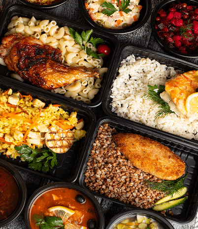

Оператор корпоративного
питания №1.
Доставка комплексного питания или бизнес-ланчей в офис
Предлагаем полноценное меню на каждый день: вкусные и сытные завтраки, разнообразные домашние обеды и ужины с быстрой доставкой по всему Санкт-Петербургу и Ленинградской области.

Заказ обедов — за 24 часа до предполагаемой даты доставки.
Гибкий подход
к каждому клиенту.
Более 50 производств
во всех районах Санкт-Петербурга
и области.
При заказе от 35 обедов в день — индивидуальное коммерческое предложение!
С 2004 года готовим каждый день
для Вас только из свежих
продуктов!
Доставка обедов в офис и на предприятие — питание с заботой о вашем персонале
В условиях плотного рабочего графика забота о полноценном и своевременном питании становится важной частью корпоративной культуры. Непродуманные перекусы, пропущенные обеды или фастфуд негативно сказываются на самочувствии и продуктивности сотрудников.
Компания «Русские традиции» предлагает решение, проверенное временем — ежедневную доставку свежих и сбалансированных обедов в офисы, на производства, в образовательные и административные учреждения. Мы берём на себя все заботы по организации питания, чтобы вы могли сосредоточиться на бизнесе.
Что вы получаете, заказывая доставку обедов у нас:
Домашние блюда, приготовленные по нормам
СанПиН и ХАССП.
Используем только свежие продукты,все этапы контролируются внутренней службой качества.
Рацион на выбор: классический,
сытный, вегетарианский.
Подстраиваемся под пожелания заказчика. Меню разрабатывают профессиональные технологи.
Своевременная доставка специализированным автотранспортом.
Обеды доставляются специализированным автотранспортом с соблюдением требований системы ХАССП и норм СанПиН: продукция транспортируется в плотно закрытой индивидуальной упаковке либо герметичных термобоксах, поддерживая безопасный диапазон температуры +2...+6 °C для сохранения свежести и качества готовых блюд.
Гибкие условия
сотрудничества.
Мы ценим каждого клиента и готовы предложить комфортные условия сотрудничества. Если численность коллектива превышает 35 человек, обсудим дополнительные выгодные условия. Организуем регулярные поставки точно по расписанию и предложим удобные способы расчета.
Мы уверены, что обед должен быть не просто приемом пищи, а возможностью восстановить силы и зарядиться энергией для второй половины дня. Именно поэтому наши повара каждый день создают вкусные и полезные блюда, а логисты заботятся о том, чтобы каждый обед был доставлен вовремя.
Правила доставки
1.
Осуществляем доставку по г. Санкт-Петербургу при заказе от 15 обедов в день. При заказе менее 15 обедов – возможен самовывоз по ближайшему к Вам адресу.
2.
Завтраки, обеды и ужины доставляются в индивидуальной упаковке охлажденными. Также предоставляются одноразовые приборы бесплатно.
3.
Заказы на «завтра» принимаются до 14:00 текущего дня.
4.
Доставка производится к заранее оговоренному времени.
5.
Стоимость доставки определяется индивидуально и учитывает следующие факторы: – расстояние вашей организации до ближайшего нашего кафе; – необходимость выполнения погрузочно-разгрузочных работ; - количество необходимых рейсов в течение одного рабочего дня.
6.
По согласованию предоставляем холодильник для хранения обедов, завтраков и ужинов (готовой еды) в безвозмездную аренду, а также микроволновую печь для их разогрева.